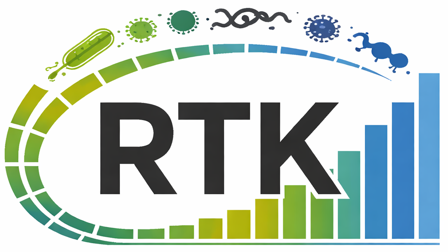

Profiling
Protal
Uses paired-end short reads and a database of universal single-copy marker genes to profile bacterial species. It retains marker alignments across samples for reference-guided, within-species comparison and phylogeny. The current method and benchmarks are described in a 2026 preprint.
1,371 Bioconda downloads
★ 13 GitHub stars
Documentation and code ↗Read the preprint ↗
Statistical modelling
cvaNMF
Applies bicross-validation to select the rank of a non-negative matrix factorisation, then evaluates the stability of the resulting signatures. It accepts numerical feature-by-sample matrices and includes analysis and visualisation functions for interpreting the decomposition.
628 Bioconda downloads
★ 5 GitHub stars
Documentation and code ↗Read the methods paper ↗
Reference database
KSGP 3.1
A curated small-subunit ribosomal RNA reference for archaeal community analysis, developed with collaborators at UEA. It combines GTDB-conformant taxonomy with cleaned prokaryotic and eukaryotic references; the lab contributed its integration with LotuS2. In benchmark datasets, KSGP 3.1 improves class- and order-level archaeal assignment over the tested alternatives.
Open the database ↗Read the paper ↗
Genome analysis
adhesiomeR
Searches Escherichia coli genomes, pangenomes or metagenomic gene catalogues for adhesin genes by BLAST. Its curated database contains 525 genes grouped into 102 adhesin systems, with a strict mode for known genes and configurable relaxed thresholds for putative homologues. It describes an adhesin repertoire; it does not by itself predict pathogenicity.
0 GitHub release downloads
★ 4 GitHub stars
Documentation and code ↗Read the paper ↗
Read processing
sdm
A compiled utility used within the LotuS workflows for demultiplexing, quality filtering, primer handling and dereplication of amplicon reads. Configuration records the filtering decisions applied to each run.
63,347 Bioconda downloads
★ 6 GitHub stars
Documentation and code ↗
Numerical ecology

RTK
Performs repeated rarefaction of large abundance matrices and calculates alpha- and beta-diversity summaries. It is available through an R interface and as a compiled command-line program.
43,981 CRAN downloads
★ 18 GitHub stars
Documentation and code ↗Read the paper ↗
Taxonomy
LCA
Assigns sequences to the least common taxonomic ancestor supported by database hits. It is used as a taxonomic assignment component in the group's amplicon workflows rather than as a biological interpretation on its own.
20,674 Bioconda downloads
★ 0 GitHub stars
Documentation and code ↗
Genome grouping
clusterMAGs
A compiled program for grouping metagenome-assembled genomes into metagenomic species using a gene catalogue and universal marker genes. The repository provides the implementation and build instructions.
0 GitHub release downloads
★ 1 GitHub star
Documentation and code ↗
Alignment quality control
MSAfix
Checks and cleans nucleotide or amino-acid multiple-sequence alignments. It can remove poorly supported regions and conservatively correct technical gap-placement offsets in coding alignments without inventing missing nucleotides; true biological frameshifts require a frameshift-aware aligner.
0 GitHub release downloads
★ 1 GitHub star
Documentation and code ↗
Base modifications
BM-TK
A Nextflow workflow for PacBio HiFi BAM files containing polymerase-kinetics tags. It checks inputs, calls 6mA, 5mC and 5hmC through jasmine and can export high-confidence calls to tables.
0 GitHub release downloads
★ 2 GitHub stars
Documentation and code ↗
Variant consensus
vcf2fna
Builds haploid, community-aware bacterial consensus contigs and annotated gene sequences from a metagenomic reference, VCF calls, depth tracks and a GFF annotation. Filtering uses explicit depth, allele-support and quality criteria rather than the VCF genotype alone.
0 GitHub release downloads
★ 1 GitHub star
Documentation and code ↗
Marker discovery
meta-mage
A Nextflow workflow for finding clade-specific marker-gene families across GTDB genomes. It clusters proteins, scores in-clade and out-of-clade prevalence at successive taxonomic ranks and emits a nucleotide marker database from species representatives.
0 GitHub release downloads
★ 0 GitHub stars
Documentation and code ↗
Benchmarking
benchpro
Compares taxonomic-profiler output against known community composition and accepts GTDB-style taxonomy. The repository is the current source for supported formats and metrics.
0 GitHub release downloads
★ 2 GitHub stars
Documentation and code ↗
Phylogeny
newvu
An interactive viewer for phylogenetic trees with sample metadata and summary values displayed alongside the tips.
0 GitHub release downloads
★ 0 GitHub stars
Documentation and code ↗
Community signatures
Enterosignature calculator
Estimates the weights of the five published enterosignatures from a GTDB genus-abundance table. The browser application and command-line workflow apply the fixed model described by Frioux and colleagues.
0 GitHub release downloads
★ 0 GitHub stars
Documentation and code ↗Open the calculator ↗Read the paper ↗
Gene catalogues
canopy2
Clusters co-abundant genes from large metagenomic gene catalogues into groups for subsequent genome and community analysis.
4 tagged versions
★ 0 GitHub stars
Documentation and code ↗